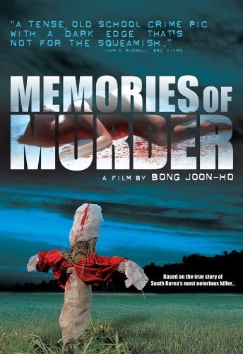
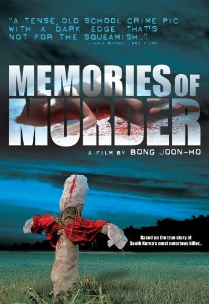
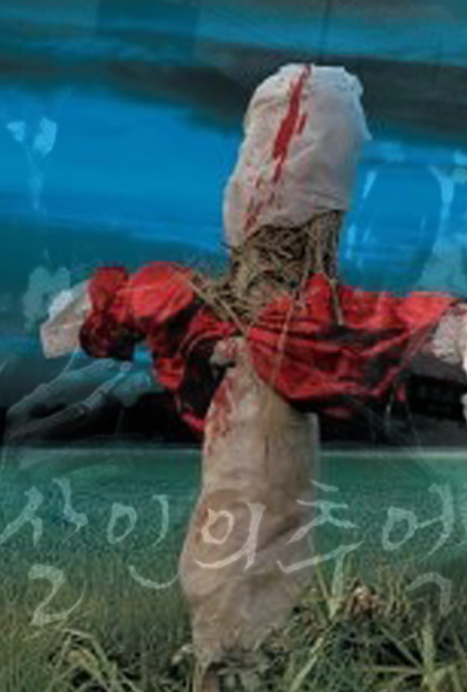
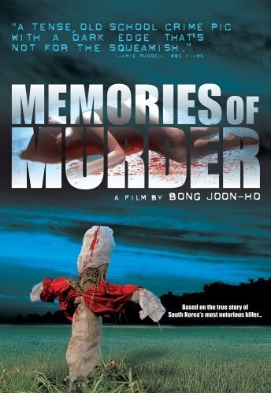

Memories of Murder
Bong Joon-ho
In October 1986, a young woman is found raped and murdered in a ditch near a field. Soon after, another woman is found raped and murdered in a field. Local detective Park Doo-man, not having dealt with such a serious case before, is overwhelmed; key evidence is improperly collected, the police's investigative methods are suspect, and their forensic technology is near non-existent. Park claims he has a way of determining suspects by eye contact. He learns from his wife that a a scarred mentally handicapped boy, Baek Kwang-ho, resides in the town, and decides to question him first. He finds him and uses his eye contact method, instinctively thinking Baek is responsible. Park has his partner Cho beat confessions out of Baek, going so far as to make him dig his own grave. They secretly record him talking about one of the murders, and decide that he is responsible.
The Korean version of the poster is using a black and white image of the two main actors. The man on the left is holding a cigarette and the one on the right is looking directly at the camera with an intense face expression. The text on the right upper corener says, "In 1986, at the country side, it was first time for both detectives." From the poster the viewers can predict a serious crime is involved in the movie.
The US version of the poster contains an image of a scarecrow covered in fabrics with blood. The title of the movie is written in bold sans serif that contains an image of what appears to be a murdered woman. The elements used in poster are scary and imply murder. Also, there is a text that says, "Based on the true story of South Korea's most notorious killer..." for the foreign audience. Overall, I like the Korean poster better because it is not too direct and makes audience curious of what will happen in the movie.